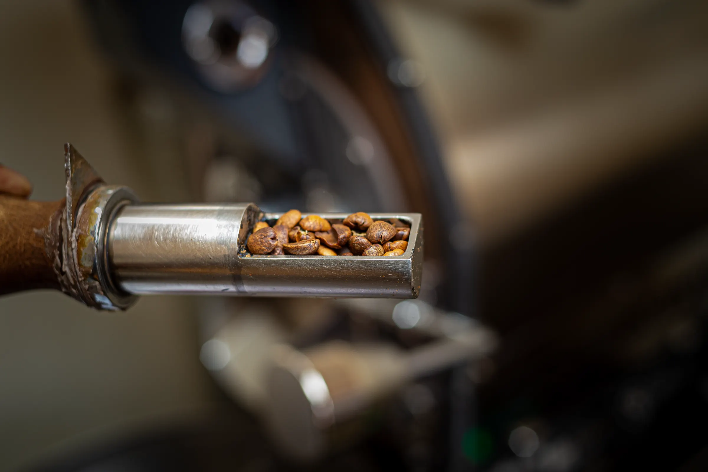
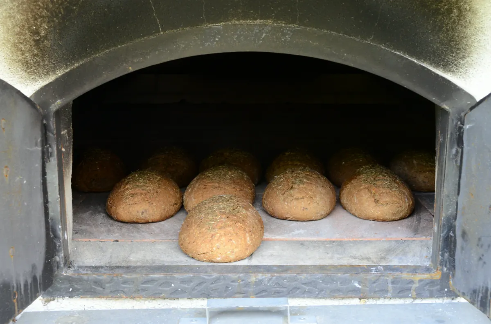
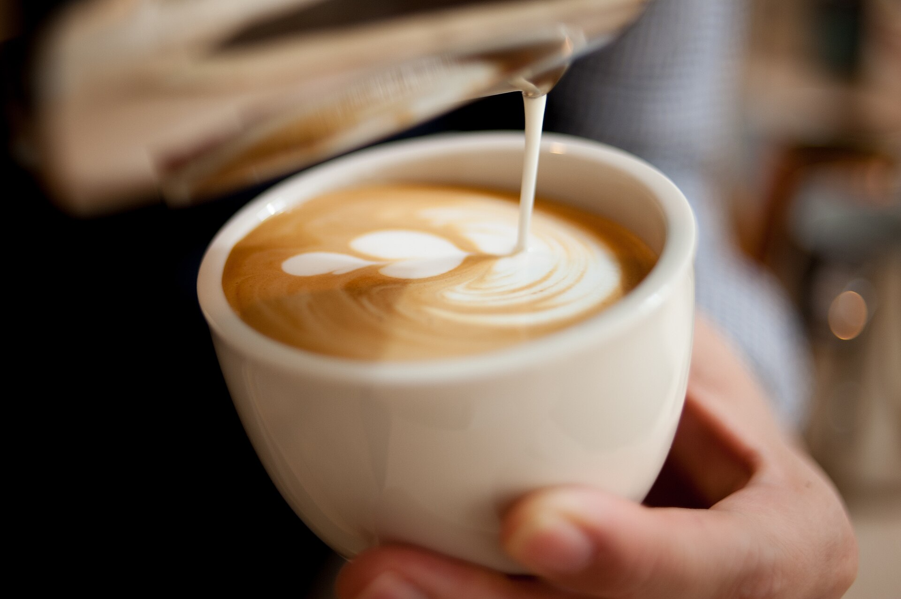

The bread oven
Each morning the loaves go straight onto the hot stone. The crust takes colour slowly while the centre stays soft enough to tear by hand.
See the loavesOn the counter
Whole loaves for home, coffee and a bun for here.
 EspressoA single shot at the bar€3.20
EspressoA single shot at the bar€3.20
Coffee with milkA single shot with steamed milk€3.60 SourdoughSlow fermented, sold by the loaf€6.80
SourdoughSlow fermented, sold by the loaf€6.80

At the coffee bar
- Filter brewed by hand
- Wednesday to Sunday
- 28 seats and a bench outside

At the cupping table
See the coffee bar
Coffee at the counter
See the coffee barVisit the counter
Ottensen, Hamburg. Wednesday to Sunday, 8 to 17.